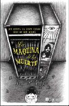

Tue, 06 Mar 2012 06:00:56 +0000
La máquina de la muerte de AA. VV.
La máquina de la muerte de AA. VV.
Título: La máquina de la muerte Autor: AA. VV. País: Estados Unidos Año de publicación: 2012 ISBN: 9788402421166 La máquina de la muerte es una de esas novedades editoriales cuya publicación ya merece un párrafo aparte. Todo comenzó en el año 2005, cuando tres jóvenes escritores norteamericanos publicaron una entrada en su blog Dinosaur Comics, [...]
Título: La máquina de la muerte
Autor: AA. VV.
País: Estados Unidos
Año de publicación: 2012
ISBN: 9788402421166

La máquina de la muerte es una de esas novedades editoriales cuya publicación ya merece un párrafo aparte. Todo comenzó en el año 2005, cuando tres jóvenes escritores norteamericanos publicaron una entrada en su blog Dinosaur Comics, en la que imaginaban la creación de una máquina que predice la causa de muerte de sus usuarios. Por los siguientes dos años, y de manera espontánea, el blog recibió setecientos relatos de diferentes escritores noveles y profesionales de todo el mundo sobre esa misma idea, demostrando una gran inventiva y variedad de registros. Entonces, los tres creadores del blog se decidieron a convertirlo en libro. Para ello, seleccionaron los treinta mejores relatos y buscaron editor.
El fenómeno La máquina de la muerte se consolidó al ubicarse el libro en el puesto número 1 de los más vendidos de Amazon el día en que se publicó. Una nueva demostración del poder del boca a boca en los tiempos de Internet. Desde ese momento, esta obra ha cautivado a lectores de todo el mundo. Una antología de treinta relatos, escritos por treinta autores diferentes, e ilustrados por treinta conocidos artistas de la Red, se convierte en una obra colectiva de sorprendente calidad.
Éstas son algunas de las críticas que La máquina de la muerte ha recibido: Cory Doctorow, blogger y autor de X dijo “El existencialismo nunca fue tan divertido.”. Strange Horizons expresó: “Al principio me sorprendió la originalidad del fenómeno, pero después comprendí la profundidad y la inteligencia del mismo.” The Onion AV Club originale dijo: “Una antología maravillosa, inteligente y creativa, que parte de una idea singular.”
| Lo mejor de la quincena
Lo mejor de la quincena
Dos series de televisión que viajaron en el tiempo: En una época en la que el cine se ha deslucido, el talento y la sorpresa se han trasladado al universo de las series televisivas. En esta entrada, Jorge Letralia nos recomienda dos series “cuyas historias emocionan sin presumir, hechas para nada más que el disfrute”: [...]
Dos series de televisión que viajaron en el tiempo: En una época en la que el cine se ha deslucido, el talento y la sorpresa se han trasladado al universo de las series televisivas. En esta entrada, Jorge Letralia nos recomienda dos series “cuyas historias emocionan sin presumir, hechas para nada más que el disfrute”: Burn Notice y White Collar. Si bien reconozco que son una deuda pendiente en mi agenda –miro series, pero no más de una o dos a la vez-, agradecemos y compartimos la recomendación.
Devoradores de cadáveres, de Michael Crichton: Al igual que Balbo, yo tampoco sabía que la película El guerrero número 13, con Antonio Banderas, estuviera basada en un libro del autor superventas de los Estados Unidos. Pero por cómo hablan en Hislibris de esta novela, todo parece indicar que vale la pena, mucho más que la cinta, que por lo que recuerdo pasó bastante desapercibida.
Librerías y edición 21: Desde Pensódromo, en este excelente artículo se analizan las diferentes maneras que tienen las librerías y las editoriales a la hora de abordar la crisis. ¿Cuáles son las salidas posibles? Se analizan las perspectivas de Ismael Gómez García, autor de Ágora o nunca, y la de Manuel Gil en Antinomias libro, posturas encontradas frente a las cuales hay que tomar una posición.
La historia de mi pureza, de Francesco Pacífico: Muy divertida la crítica de Comiquera a esta novela italiana. No todas las buenas reseñas son aquellas que alaban ciegamente a los libros, sino también aquellas que apelan a la ironía, las críticas justificadas y el sentido del humor. Por cierto, no voy a decir que me atraería la lectura de la novela, pero no puedo dejar de recomendar la divertida manera que tiene Comiquera de desplegar sus argumentos y quejarse de su mala racha. ¡Ya habrá un buen libro para más adelante, amiga!
Martin Amis. La casa de los encuentros: Y para cerrar, ahora sí, con una recomendación que valga la pena, los invito a leer ésta de Palimp. Me siento identificada con las dificultades para reseñar un libro que se ha leído hace mucho tiempo. Y aprecio que siempre nos obsequie con una fragmento de la obra en cuestión.